始皇帝的泥巴軍團
舒服的睡到自然醒(那也才六點半而已~_~)，只帶了筆記本跟筆還有相機，準備要去看兵馬俑。
從住的地方走路到西安火車站只要短短的十分鐘，算住的很交通方便。
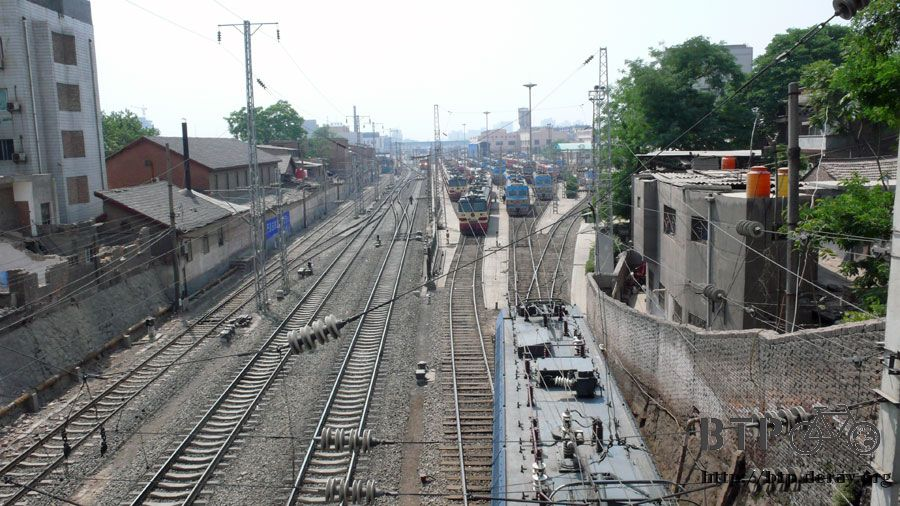
這裡有好多好多的公車跟旅遊接駁車，從這邊應該想到哪都沒問題吧。
怕車上不找零，所以花一塊錢買早餐，填飽肚子兼換零錢。
在火車站前面亂走亂走，很幸運就搭上往兵馬俑的大巴士，是雙層的那種，而且走高速公路，
所以很快就到(有些車是走一般道路，同時為了省過路費跟沿路載客)，車資只要七塊錢，還算合理。

在我搭上車之前，就一直有計程車在拉客，要到哪？華清池？兵馬俑？秦王陵？
這樣不停的問、不停的問，好奇想了解一下搭計程車的價碼是多少，所以就搭理了一下司機。
從這邊搭計程車到兵馬俑，開價一百塊，若是跳表的話，這裡是一公里1.2元人民幣。
中國的小綠(台灣是小黃，這邊是綠色的)也算不便宜呀。
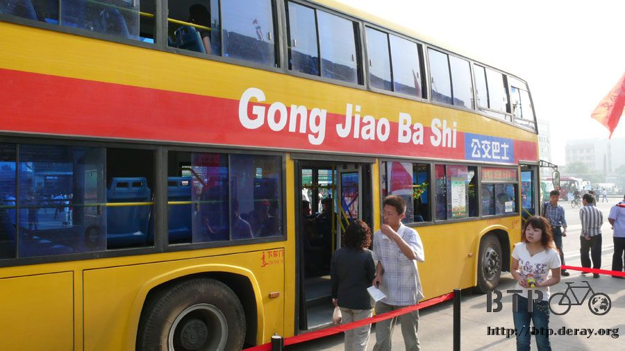
大陸的英文翻譯很酷，『公交巴士』可以翻譯成『Gong Jiao Ba Shi』
這樣是翻譯給誰看呢？外國人肯定看不懂這樣的英文邏輯(這也沒有邏輯可言)
而中國人當然是看到中文就懂了，所以肯定是翻譯給看不懂中文字的小朋友看的(因為他們學拼音中文)
除了像我這樣的自助旅行者，在火車站前面也可以看到各國的背包旅行者，翻著自己國家帶出來的地圖，尋找自己的目的地。
我很嚮往也一直都遵循著這樣的旅行方式，除非跟團旅行有免費的一天，不然我到老死都不會參加旅行團出遊。
轟的一聲，巴士開動了，沿路經過華清池(貴妃洗澡的地方？沒興趣所以沒去)
秦始皇陵，從外面看就是一座不算高的大土堆，因為裡面都是水銀蒸氣，有劇毒，
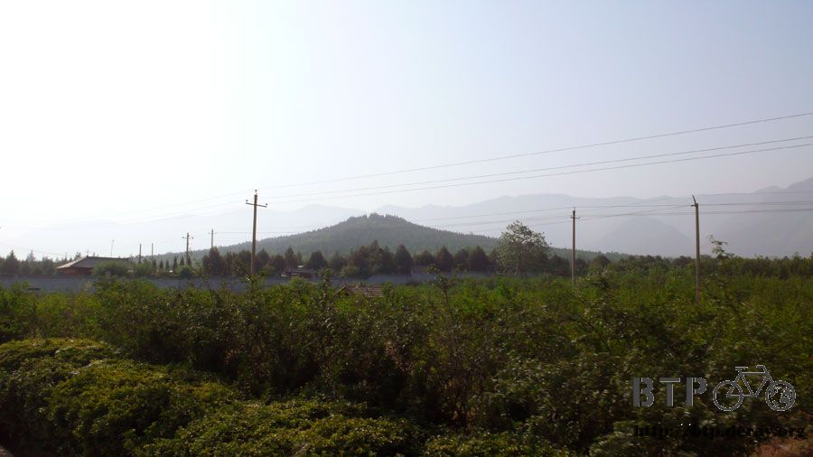
光是泥土表面所測得的水銀含量，就高出標準值250倍，目前已知有九個盜墓的隧道。都是以毒死盜墓者收場。
同時墓裡還有許多機關，且深不可測，具歷史記載，負責工程的人向大王回報說
『墓穴已經挖的很深了，在底下連火把都點不起來，只有地底的回音，已經挖不下去了。』
連火把都點不著的深度究竟有多深呢？當時動員了72萬名工人修築的墓穴，究竟有多宏偉，沒有人知道。
目前秦王陵仍是無法開挖的階段，所以只能想像裡面的樣子，和到這裡踏踏青，所以這一站我也沒有下車。
終點站就是兵馬俑了，從下車的地方要走大約半小時才會進到售票處，這一路上當然都是商家了，
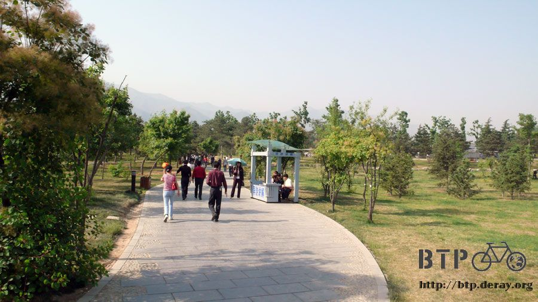
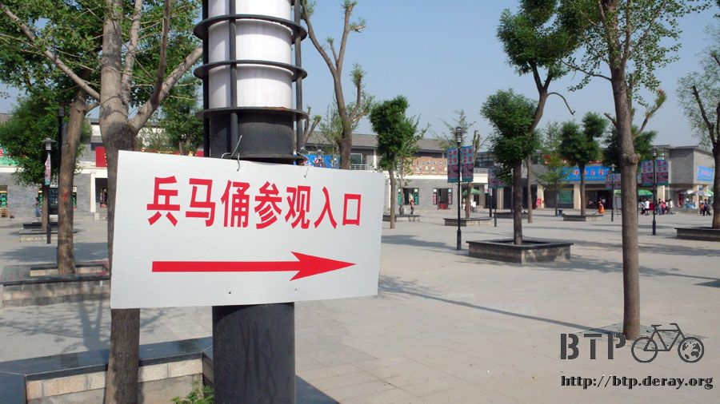
而且都在賣兵馬俑~_~，也蓋了一座專做觀光客生意的秦俑村，裡頭盡是餐廳和旅館以及紀念品店。
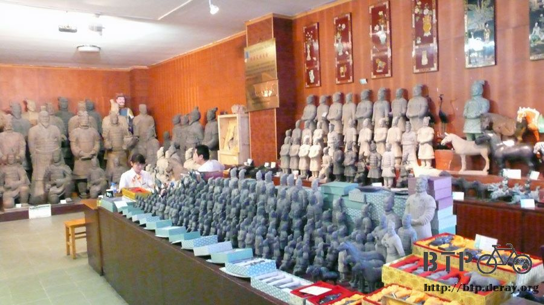
買了一張90元的票，小小一張像悠遊卡一樣，進去之前還要先經過金屬感應器的檢查。

兵馬俑的發覺是一個農民無意間在1974年的時候，發現第一個碎片開始，展開這三十年的傳說。
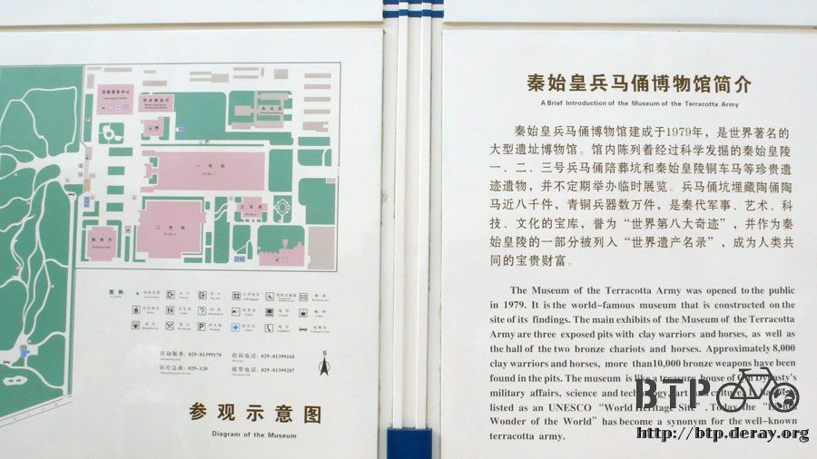
而這個農民，現在就在秦俑村這邊幫遊客簽名為生。
因為兵馬俑在歷史上完全找不到任何一個字的文字記錄，所有的東西都只能靠現代的考古學家的推測來解釋。
簡單的說就是秦始皇很怕死，他也怕在他死後，他打下來的江山會被搶走，
所以他給自己蓋了最大的墓穴，至今沒有人一探其究，也為了保護自己的墓穴，他製作了幾千具的黃土兵團，
用來保衛他的地下王國，這兵團從步兵、騎兵、戰車、文武官員、武器通通一應俱全。
可惜在秦的末年，大兵攻進咸陽的時候，同時也發現的始皇帝的泥巴軍團。
他們把所有的武器都拿走，然後砸爛所有的兵馬俑，並且放一把火全部都將這些始皇帝的軍隊燒光光。
他心裡應該是在大笑，這什麼泥巴軍團，簡直不堪一擊！

兩千兩百八十年後，這些泥巴軍團因為偶然又被世人所發現。
大批的考古學家挖掘這個沒有留下任何歷史記載，卻又如此龐大攝人的歷史文物。
兵馬俑目前分三個展區，分別是一號、二號和三號展區。
一號是最早挖掘出來的，裡面的士兵都面像東邊，因為武器都被拿走了，剩下的只有被砸爛的和燒黑的兵馬俑碎片。
而碎片又跟泥土經年累月結合在一塊，使得復原工作非常的艱難，平均復原一個兵馬俑的泥像，要花好幾個月的時間。
而復原兩輛挖掘出來的青銅戰車，則花了八年的時間才復原完畢得以展出。

完全是立體拼圖的極致考驗，和毅力耐力的無窮耗損，但他們還是做到了，所以才有今天看的到的完整兵馬俑像。
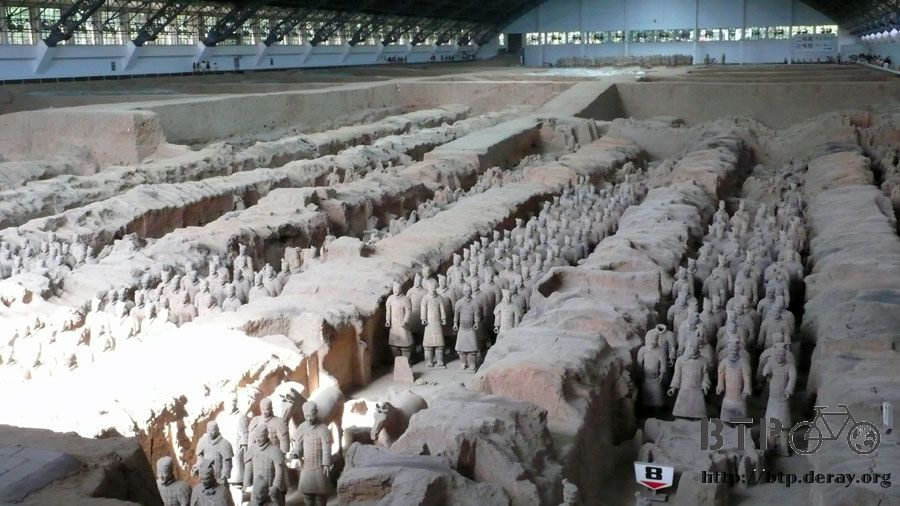
兵馬俑雖然現在看起來都是土黃色的，但其實剛製作好的時候，每一個都塗上了漂亮的五顏六色，

只是這些顏料經過兩千多年的掩埋，有的已經被分解，有的則分離，在挖掘出土的同時就會被剝離兵馬俑。
而幸運挖出來，同時還保有顏色的兵馬俑，目前以人類的技術，也只能保存不讓顏色消滅，
而無法復原成漂亮的兵馬俑。

講到這裡，我很佩服中國當局決定暫停繼續挖掘一號坑，以及保存的幾乎完好的二號坑。
將還有六千多具的兵馬俑，讓他們繼續的埋藏在黃土堆裡，即使挖掘出來會吸引更多的觀光客，
但因為目前人類科技的不足，挖出來只是加速兵馬俑的風化和分解，而無法將它復原。
所以就等到將來人類的技術進步到能還原兵馬俑原貌的那一天，再來繼續挖掘吧。
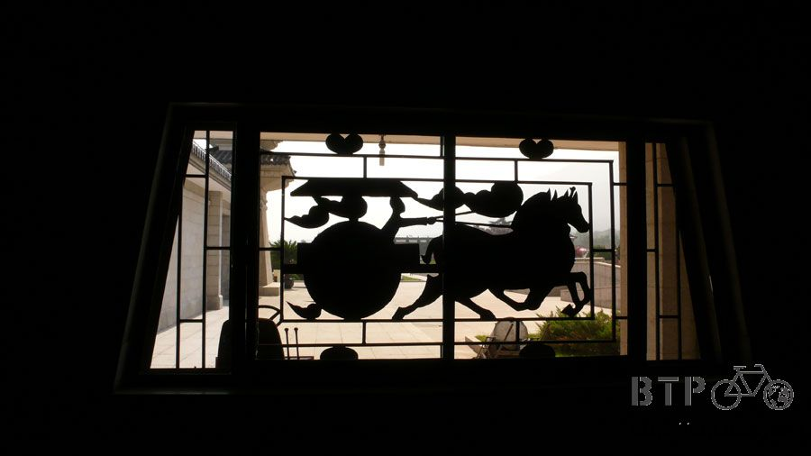
有機會來參觀兵馬俑的人，絕對千萬不要小氣，請在入口的地方請一個講解的導遊。
費用很便宜，五人以下的團體只要30塊，而十人以下也只要40塊而已。
他們都是非常專業的解說員，可以講解很多非常棒的知識，讓你參觀的有價值有收穫。
而且這一趟講下來，是一～兩個小時以上的唇舌工夫，所以真的算很便宜的。
因為我沒有錢請解說員，所以我就聽別人請的解說員來講解。
今天在兵馬俑展區待了五個小時，真的是收穫良多，沒有白走一趟古城西安。

二號坑只測試性的開挖了幾個地方，然後推論出整個坑裡的兵種分布圖為何。
相較於一號坑都是步兵，二號坑則是什麼兵都有，而且能看到兵馬俑坑挖掘前的樣貌，
為了保護這些尚未挖掘出來珍寶，二號坑的光線極暗(一號坑很明亮)而且溫度很低，對於保存盡了責任。
三號坑則是軍師們開會的地方，很小很小的坑，比各位的家大不了多少，分為南北兩個廂房，
大家都在裡頭面對面的開會，然後外面還有衛兵站崗，
南廂房是修復過的兵馬俑，北廂房則是保持挖掘出來的原貌，
兩個相較之下，看過之後你會覺得兵馬俑能夠被修復完成，根本就是人類維修藝術品的一個傑作。

兵馬俑知所以會被列入世界八大奇蹟，主要是因為他的『多、大、精、美』
八千多具兵馬俑，佔地數公里的坑道，每一個兵馬俑的製作都是獨一無二的，
千人千面，臉孔沒有重複，喜怒哀樂高矮胖瘦都有，衣服穿著都考究當時的人文風俗。
從腰帶的樣式、頭髮的綁法、鞋帶的紋理都絲絲入扣。
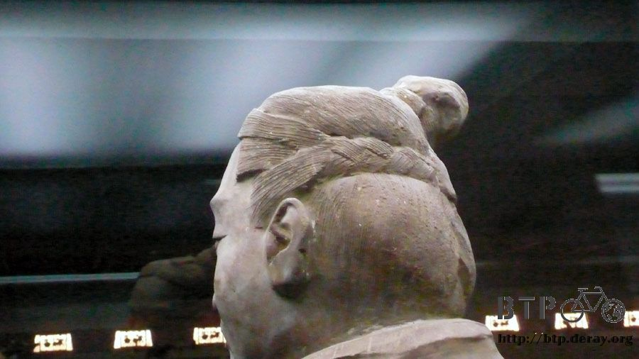
製作上真的細緻到一個不可思議的地步，連兵馬俑的鞋底上面的紋路，
都要和當時的防滑鞋一樣，雕上不同的凹凸。
頭髮的髮絲也是清楚可見，並且依照髮型的不同，頭髮梳理的樣子也有所差異。
這不光是數量龐大的複製藝術，而是每一個都花費心力去製做的寫實藝術。
武器部分，除了大多數被幹走的，還留下了少數保留下來的。
隨便挖到的一把青銅劍，剛被挖出來的時候，被壓在一個重達三百公斤的兵馬俑下面，整個都被壓彎了，但是沒有斷。
當考古人員把兵馬俑扶正，這把被壓彎的青銅劍，在幾分鐘之內就彈回了原本的形狀。
而且青銅是極容易生鏽的金屬，生鏽後會變成綠黑色。
但是這一把兩千多年前的青銅劍，出土的時候依然保有當時的光澤和鋒利程度，
輕輕一劃就能割破三十張報紙，並且彈性如昔，簡直是人類冶金史上的奇蹟。
因為人類發現如何讓青銅不要生鏽的方法，是在1930年代由歐美人士發現的。
但是在這之前的兩千多年，秦朝人就用這樣的方式來讓武器防鏽，只可惜後來就失傳了，這真是不可思議的文明。
這些當然都是偷偷聽解說員介紹才知道的，我沒有這麼博學多聞=..=
但要是沒有聽解說員這樣講的話，那就只是看到一把劍放在那邊，覺得沒什麼就走過去，那就真的可惜了！
再次幫那邊解說員打個廣告，我今天起碼聽了超過十五個解說員的介紹，(老聽同一個的話就偷聽的太明顯了)
每一個真的都很專業，要是有機會來的話，荷包不要小氣在這邊呀。
其他還聽到很多小故事，比如說所有出土的兵馬俑，通通都是單眼皮，可不是因為雙眼皮難做喔。
因為在秦朝，男人覺得單眼皮才帥，雙眼皮就顯得娘娘腔。
還有以前看兵馬俑，只要付一毛錢的門票錢，還可以下去摸摸兵馬俑。
但是有一次有一個人把兵馬俑將軍的頭給扳下來，裝在包裡偷走了。
那個頭在黑市賣了32萬美金，所以現在看兵馬俑，就不能像以前一樣靠近看了。
秦朝的軍隊何止幾千幾百萬，這些能被做成兵馬俑的八千士兵，想必是幫秦王打下江山，
統一中國的勇猛戰士，每一個都是驍勇善戰，所以才用他們的泥像來保衛秦王的地下陵墓。
那如果這些兵馬俑都是依照真人所製作出來，所以每一個兵馬俑才都會顯得生動而且各異其趣的話，
那是不是就可以推論成，有點像是現在路邊藝術家幫人畫現場素描那樣，
在秦朝是由工匠看著士兵的臉，然後當場製作出一模一樣的泥像來。
接著再燒烤成兵馬俑，然後塗上美麗的顏色。
想到這裡，彷彿可以聽見，當時的士兵跟工匠說：
『把我做成單眼皮的，這樣看起來比較帥！』
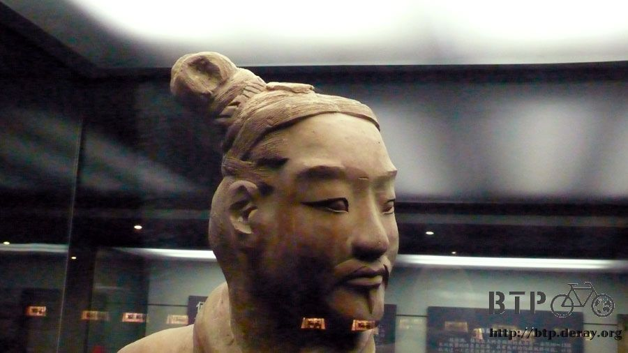
五個多小時，很快就過去了，早餐只吃了三個炸餅，連水都沒帶就出來，結果又渴又餓，
但是兵馬俑這邊的餐廳、飲料店，價位都超貴的，是市價的三倍以上。
以外國人的消費能力，應該會覺得很便宜，這沒什麼麻，但是我現在的水準是窮人，所以要省一點花。
(可能是因為高票價或是高知名度的關係，參觀的人將近一半都是外國人)

外面賣兩塊五的汽水，裡面要賣八塊。
餐廳都是給旅行團點合菜吃大餐的地方，難得看到爆米花，一杯也要十塊錢人民幣，嘆了口氣忍著肚子餓也要回到市區再吃飯。
當初在日本環球影城的時候，折合台幣要三百多塊的爆米花都毫不心痛的買下去，
現在折合台幣不過四十多塊的爆米花，則被我視為天價。
搭車回到市區，很開心的去四川的餐館點了紅燒牛肉麵(居然沒有肉？這算什麼牛肉麵？)
還有很好吃的砂鍋肥腸(有點像是三媽臭臭鍋)，終於能大快朵頤的享受我的價位的午餐。

吃飽後又去便利商店買了兩包泡麵、一包旺旺餅乾和一隻五角冰棒，買一堆也才花七塊錢而已。
防小偷的技巧講解
把零錢放在明顯的地方，要是真的遭小偷了，那零錢肯定會不翼而飛。
也許這樣就能滿足小偷的心態，而防止他翻你的行李，造成更大的損失。
從網吧散步回旅館的路上，在牛奶專賣店(只賣牛奶的雜貨店)買了五包牛奶，
其實本來只打算買兩包的，但是兩包要2.2元，我想說最小幣值不就五毛嗎？
0.2元要怎麼給呀？結果居然真的有一毛的零錢，而且一樣是紙鈔=..=
真是一個神奇的國家，全部都是紙鈔，而且超級好用的，即使是一張一塊錢，也能讓你吃五個包子。
但是在中國兩個星期了，都沒有需要用到一毛的機會，覺得拿三張一毛在身上很礙事，
為了湊整數，就拿了五包牛奶，晚餐就喝三包，配旺旺的餅乾。
話說旺旺在中國還真努力，打開電視都可以看到他的廣告。
但是廣告都拍的很冷~_~像那個什麼『O泡果奶』，真是一個比天線寶寶還腦殘的廣告。
明天打算騎小多在西安市區晃晃，也許會騎到咸陽去參觀一下，
因為接下來要騎310國道離開西安，就不會經過咸陽了。
繼續閱讀：5.7 西安漫遊
中國-人民幣－ 1：4.3 台幣
5.6 |
總計：162.5元 |
早餐甜餅三個1元、往返火車站到兵馬俑的車資14元、兵馬俑門票90元、午餐紅燒牛肉麵＋砂鍋肥腸13元、雜貨店泡麵兩包3元、雪餅一包3.5元、冰棒三隻1.5元、網吧一小時1元、五包牛奶5.5元、住店30元 |
|